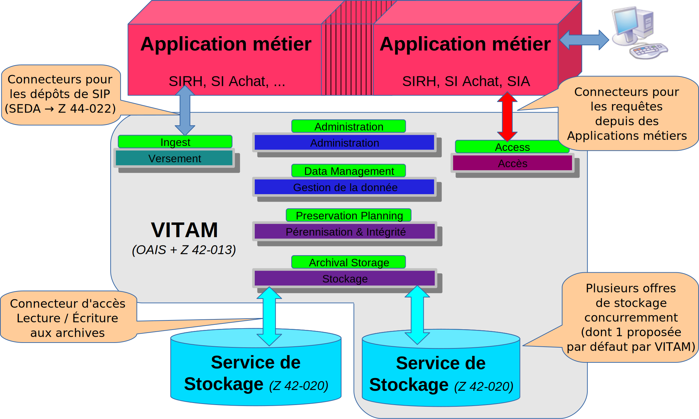

3.2. Interfaces externes du système¶

Vue de VITAM dans son environnement (vue “boîte noire”)
3.2.1. Interfaces requises¶
Dans cette version du système, aucune interface externe n’est requise par VITAM.
3.2.2. Interfaces métier exposées¶
VITAM expose trois grands groupes d’API métier :
- Les API d’ingest : elles permettent l’entrée d’une nouvelle archive dans le système ;
- Les API d’accès : elles permettent d’accéder aux données d’archive présentes dans le système (métadonnées et données d’archives, journeaux, référentiels) ;
- Les API d’administration fonctionnelles : elles permettent notamment la modification des référentiels métier.
Ces API sont exposées en tant qu’API REST (HTTPS) au niveau des composants externes (composants *-external), avec un accès protégé par une authentification par certificat.
Voir aussi
Les points relatifs à la sécurité des interfaces externes exposées sont abordés dans la section sécurité